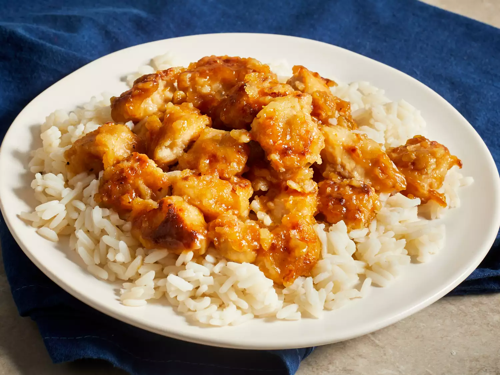

Orange Chicken Recipe

Description
Orange chicken is a popular item at Chinese restaurants.
It consists of small cubes of chicken that are breaded,
pan-fried, and coated in an orange sauce.
The orange sauce is sweet with a little tang and a hint
of spice. It's mainly known for its orange flavor
(as you can guess from the name). It's typically made
with orange juice and orange zest to achieve the citrus flavor.
Ingredients
For 4 servings
Sauce:
- 1 ½ cups water
- ⅓ cup rice vinegar
- ¼ cup lemon juice
- 2 ½ tablespoons soy sauce
- 2 tablespoons orange juice
- 1 cup packed brown sugar
- 2 tablespoons chopped green onion
- 1 tablespoon grated orange zest
- ½ teaspoon minced fresh ginger root
- ½ teaspoon minced garlic
- ¼ teaspoon red pepper flakesr
- 3 tablespoons cornstarch
- 2 tablespoons water
Chicken:
- 2 large skinless, boneless chicken breasts, cut into ½-inch cubes
- 1 cup all-purpose flour
- ¼ teaspoon salt
- ¼ teaspoon pepper
- 3 tablespoons olive oil
Steps
- Gather all ingredients.
-
Combine water, rice vinegar, lemon juice, soy sauce, and orange
juice for sauce into a saucepan over medium-high heat. Stir in
brown sugar, green onion, orange zest, ginger, garlic, and pepper
flakes; bring to a boil. Remove from heat, and cool for 10 to
15 minutes.
-
Place chicken in a resealable plastic bag. Pour in 1 cup cooled
sauce. Seal the bag, and refrigerate for at least 2 hours.
Reserve the remaining sauce.
-
Mix flour, salt, and pepper in another resealable plastic bag.
-
Remove chicken from the marinade and place into the bag of
seasoned flour. Seal the bag and shake to coat.
-
Heat the olive oil in a large skillet over medium heat.
Cook chicken in the hot skillet until browned on both sides.
-
Remove to a paper towel-lined plate and cover with aluminum
foil. Wipe out the skillet.
-
Pour reserved sauce into the skillet and bring to a boil
over medium-high heat. Mix together cornstarch and water
until completely smooth. Stir into the boiling sauce.
-
Reduce heat to medium-low, add the chicken, and simmer,
stirring occasionally, until cooked through, about 5 minutes.
-
Serve over rice and enjoy!
Home